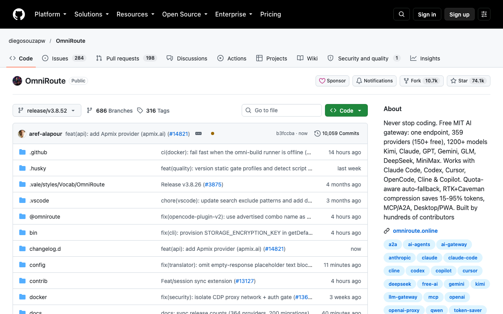
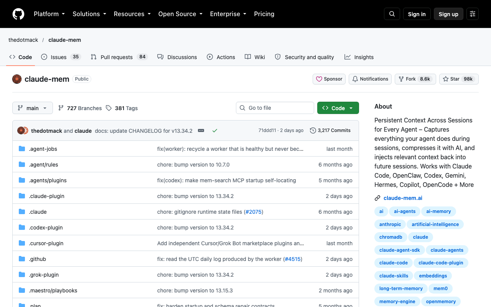
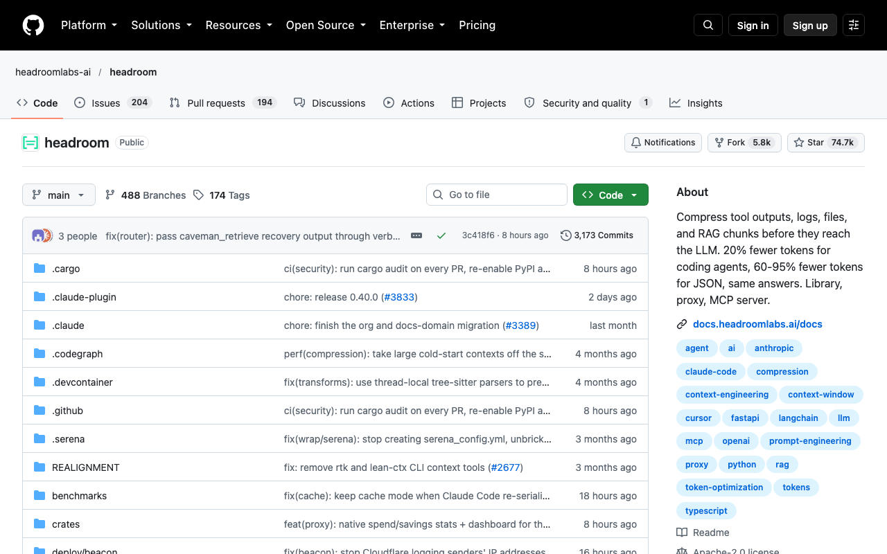
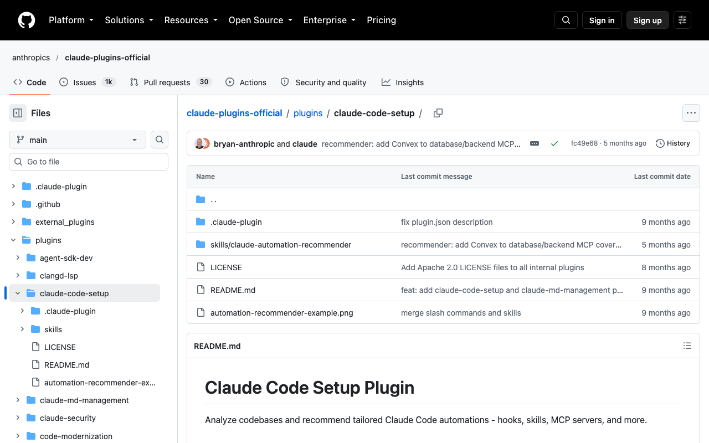
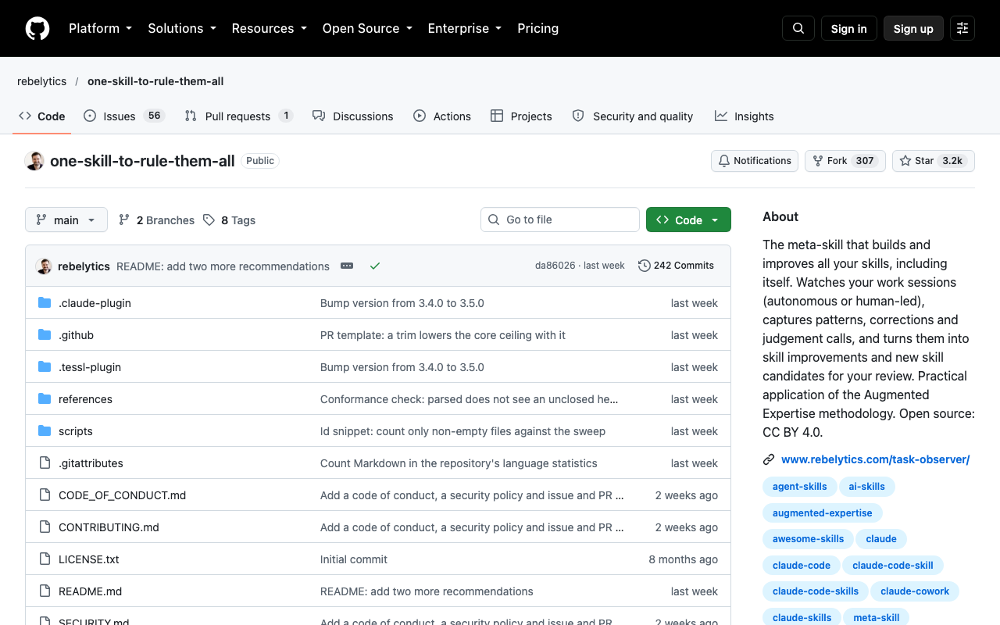

CLAUDE CODE · ПЯТЬ ИНСТРУМЕНТОВ

Пять дополнений для Claude Code: что каждое решает
Средний уровень
Как выбрать дополнения для Claude Code, если работа постоянно спотыкается об одну помеху? Найди свой случай ниже: закончился лимит, пропала память о проекте или мешают длинные отчёты. У каждого инструмента своя работа и ограничения. Начни с одного подходящего раздела, чтобы не устанавливать всё сразу без понятной задачи.
Работаешь в Claude Code, а одна и та же помеха снова обрывает задачу. Какое дополнение поможет продолжить именно тебе? Найди свою ситуацию и открой нужный раздел
- Claude Code остановился посреди задачи: закончился лимит. Как продолжить работу, пока он не обновился?
- Открываешь новый чат, а Claude не помнит, что вы решили вчера. Приходится всё пересказывать заново
- Чат разросся: в нём длинные логи (технические отчёты). Claude Code перечитывает их и тратит токены (части текста, по которым считают расход)
- Не знаешь, какие скиллы (готовые инструкции) и подключения нужны твоему проекту
- Раз за разом поправляешь агента, то есть Claude Code, в одном и том же
Содержание статьи
Дополнения для Claude Code: OmniRoute при исчерпании лимитаclaude-mem: когда надоело объяснять проект с нуляHeadroom: когда мешают длинные технические отчётыClaude Code Setup: когда неясно, чем дополнить проектTask Observer: когда одни и те же правки повторяютсяС чего начать сегодняДополнения для Claude Code: OmniRoute при исчерпании лимита
Бывало так: задача на середине, а Claude Code пишет, что лимит кончился. Остаётся ждать, пока он обновится

Здесь выручает OmniRoute. Он ставится на твой компьютер и работает посредником между Claude Code и нейросетями, такого посредника называют шлюзом. Запросы идут через него, а он решает, какая модель (вариант нейросети) ответит
Среди бесплатных вариантов есть OpenCode Free: для него не нужна регистрация или ключ этого сервиса.
Порядок выбора, по описанию разработчика: сначала твоя подписка, если она добавлена в OmniRoute, потом подключённые тобой платные сервисы, затем дешёвые модели и бесплатные. Кончился лимит на одном уровне - запрос может уйти на следующий
Это похоже на диспетчера такси: ты вызываешь машину, а какая из свободных приедет, решает диспетчер
Как начать:
-
Открой терминал (окно для ввода команд), установи OmniRoute командой
npm i -g omnirouteи запусти его командой
omniroute -
В браузере открой http://localhost:20128.
-
В разделе Providers (подключения к нейросетям) выбери OpenCode Free без регистрации и ключа этого сервиса.
-
Если подключаешь Claude Code вручную, скопируй ключ из раздела Endpoints (адреса для подключения): это локальный ключ OmniRoute, а не ключ OpenCode Free.
-
Для быстрого запуска введи в терминале
omniroute launchКоманда откроет Claude Code и сама передаст ему нужный адрес и локальный ключ.
Результат: Claude Code начнёт отправлять запросы через OmniRoute к подключённой модели.
Шаги подключения есть в инструкции проекта OmniRoute, запуск Claude Code описан в инструкции того же проекта для Claude Code
claude-mem: когда надоело объяснять проект с нуля
Возвращаешься к проекту после перерыва, а Claude Code не помнит, что вы уже решили и какие варианты отбросили. Приходится снова пересказывать рабочую историю

claude-mem - плагин, то есть дополнение к Claude Code. Он сохраняет наблюдения между сессиями (отдельными рабочими разговорами): замечает действия инструмента, делает короткие сводки и подставляет нужные сведения при следующем запуске.
Это как блокнот коллеги: он записывает важные решения и перед новой встречей открывает нужную страницу
Как начать:
-
В Claude Code введи
/plugin marketplace add thedotmack/claude-mem -
затем
/plugin install claude-mem -
и перезапусти Claude Code.
Результат: сведения о прошлых разговорах будут появляться в новых.
-
Другой способ - запустить в терминале
npx claude-mem installи выбрать сервис памяти в ходе установки.
Оба маршрута описаны в инструкции проекта claude-mem.
Headroom: когда мешают длинные технические отчёты
Просишь Claude Code найти ошибку, а он приносит длинный лог или сотни строк результатов поиска. Ему приходится учитывать весь этот текст в дальнейшей работе, и место для полезного разговора сокращается

Headroom - программа на твоём компьютере, которая сжимает материалы до того, как их увидит нейросеть. Она определяет, перед ней лог, код или обычный текст, и подбирает способ сжатия.
Полный исходник остаётся локально: если понадобится деталь, его можно запросить обратно. Представь папку с бумагами, к которой приложили короткое содержание и сохранили оригиналы под рукой
Как начать:
-
Открой инструкцию проекта Headroom.
-
После его установки введи в терминале
uv tool install --python 3.13 "headroom-ai[all]" -
Затем запусти
headroom wrap claudeкоманда запустит Headroom на твоём компьютере и откроет Claude Code через него.
-
Выполни
headroom doctorчтобы проверить подключение.
Результат: Claude Code получает сжатые материалы, а полный текст можно вернуть при необходимости.
-
Для следующего разговора снова запускай
headroom wrap claude
Claude Code Setup: когда неясно, чем дополнить проект
Открываешь каталог расширений Claude Code и не понимаешь, что из него пригодится твоему проекту. Список большой, а задача у тебя вполне конкретная

Claude Code Setup - официальный плагин Anthropic, который просматривает файлы проекта и предлагает подходящие настройки работы.
Он может посоветовать скилл (готовую инструкцию для повторяющейся задачи), хук (действие, которое запускается автоматически), команду, отдельного помощника или MCP-сервер для подключения внешнего инструмента.
Похоже на мастера, который сначала осматривает рабочее место, а уже потом говорит, какой инструмент добавить
Как начать:
-
Открой страницу проекта Claude Code Setup от Anthropic, установи этот плагин из официального каталога Claude Code и напиши
recommend automations for this project
Результат: Claude Code предложит подходящие дополнения по категориям.
-
Возьми одно, которое помогает с текущей задачей, и реши, нужно ли его подключать
Task Observer: когда одни и те же правки повторяются
Ты снова исправляешь Claude Code одну и ту же ошибку: просишь короче, возвращаешь нужный тон или напоминаешь о пропущенном шаге. После нескольких задач хочется, чтобы эта поправка попала в постоянные инструкции

Task Observer - скилл, то есть папка с инструкциями для ИИ-помощника. Пока ты работаешь, он замечает повторяющиеся действия, твои исправления и пробелы в других скиллах.
Затем записывает наблюдения и предлагает, какую инструкцию создать или поправить. Это как редактор, который ведёт список повторных замечаний, чтобы следующую работу начать уже с учётом них
Как начать:
-
Установи комплект командой
npx skills add rebelytics/one-skill-to-rule-them-all --skill task-observerили скачай его со страницы проекта Task Observer от rebelytics, сохранив вместе SKILL.md, references/ и scripts/.
-
Затем добавь правило запуска по файлу references/environments.md и проверь его в новом разговоре.
Результат: после нескольких рабочих разговоров в skill-observations/observation-log/ появятся записи, которые можно просмотреть перед правкой скиллов
С чего начать сегодня
Проверь одну помеху на ближайшей задаче. Для каждого случая ниже есть страница создателей инструмента с подробной инструкцией
- Кончился лимит Claude Code: OmniRoute. Проект diegosouzapw
- Новый чат не помнит прошлые решения: claude-mem. Проект thedotmack
- Длинные технические отчёты заполняют разговор: Headroom. Проект headroomlabs-ai
- Не знаешь, какие дополнения нужны проекту: Claude Code Setup. Проект Anthropic
- Повторяешь одну и ту же правку: Task Observer. Проект rebelytics
Claude Code прокачан. Что ему поручить?
Инструкция пройдена. А как сделать, чтобы нейросети приводили клиентов?
Концентрат - онлайн-мероприятие Ивана Сергеева по вайбмаркетингу: 13-15 октября, 19:00 по Москве. Участие бесплатное, регистрация на сайте до 14 октября
ЗарегистрироватьсяРеклама. ИП Сергеев И. С., ИНН 352511695540. erid: 2VtzqviiWtm